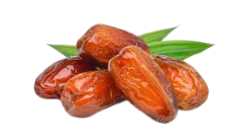

SINMA
Sintia Kurma
Kurma adalah jenis buah yang bisa tumbuh dapan saja sepanjang tahun. Namun umumnya,buah ini sering dipanen pada musim gugur atau awal musim dingin di negara asalnya. Alasannya, karena di musim dingin buah ini berada dalam kondisi paling segar.
